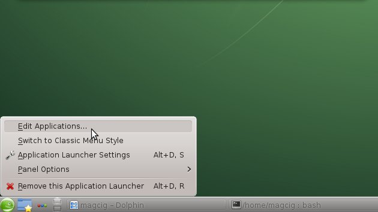
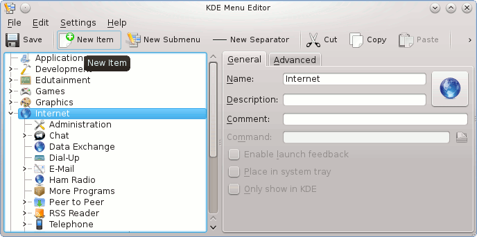
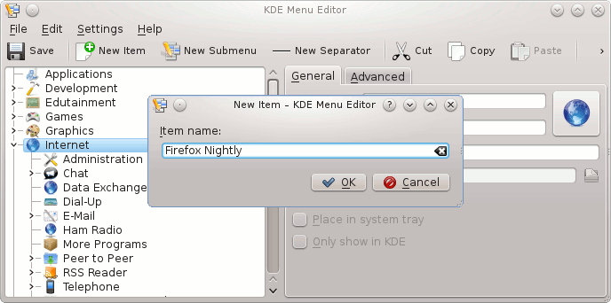
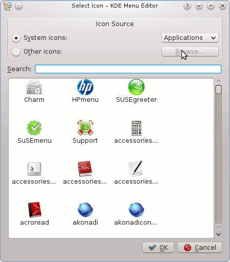
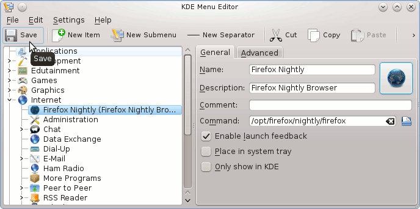

Skip to content
SriramYeluri-Learning
KDE
Type to start searching
SriramYeluri-Learning
Home
Ansible
AWS
AWS
Introduction
CFT
S3
Bitbucket
Bitbucket
Introduction
Fortify
Fortify
Fortify
Docker
Docker
Docker
Dockerfile
Git
Golang
Golang
golang
golang-projects
Jenkins
Jenkins
Jenkins-code-snippets
Linux
Linux
Overview
Vim
Centos
RedHat
Ubuntu
KDE
KDE
Table of contents
KDE Configuration Readme
How to manage KDE applications launcher
Networking
Scripting
Scripting
bash
yum
Nexus
Nexus
Yum Repos
OpenLDAP
OpenLDAP
Introduction
SonarQube
SonarQube
Introduction
VirtualBox
VNC
References
About
Table of contents
KDE Configuration Readme
How to manage KDE applications launcher
KDE
KDE Configuration Readme
How to manage KDE applications launcher



 